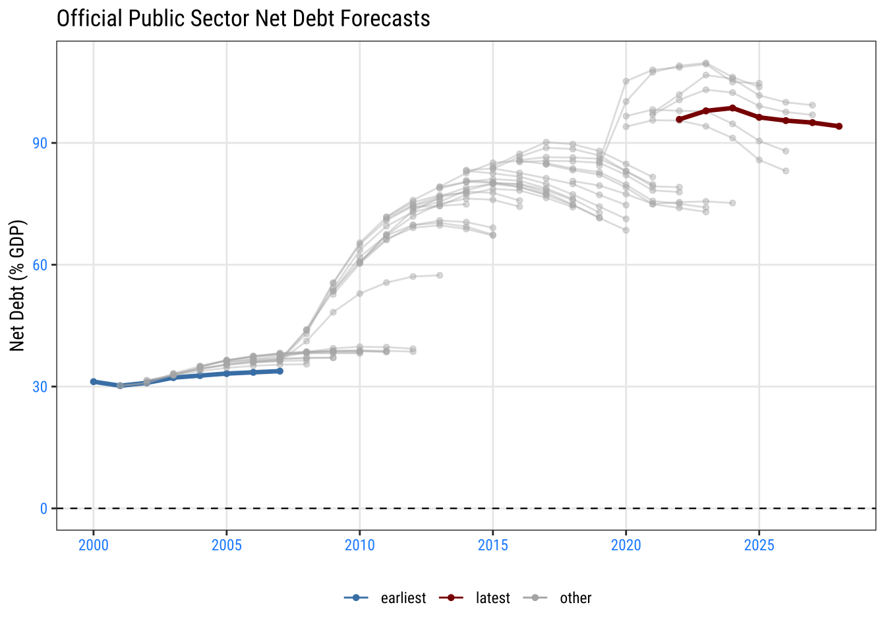
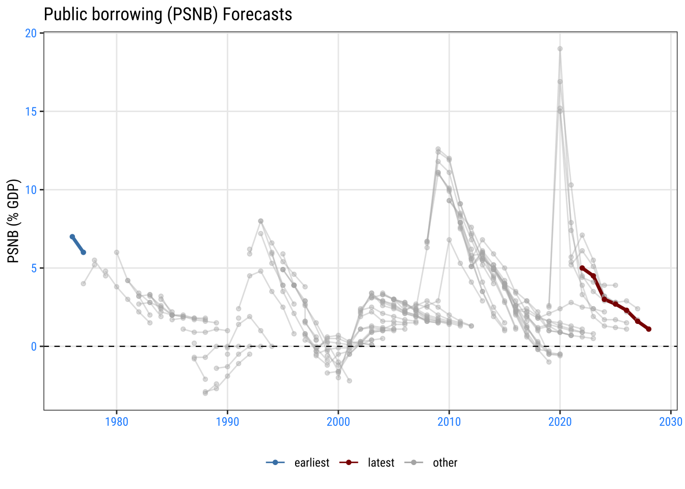
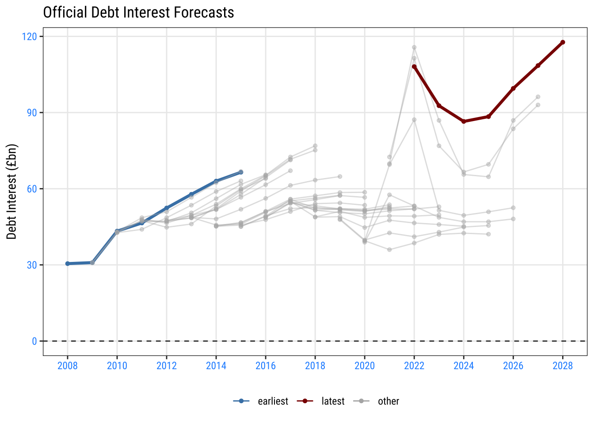
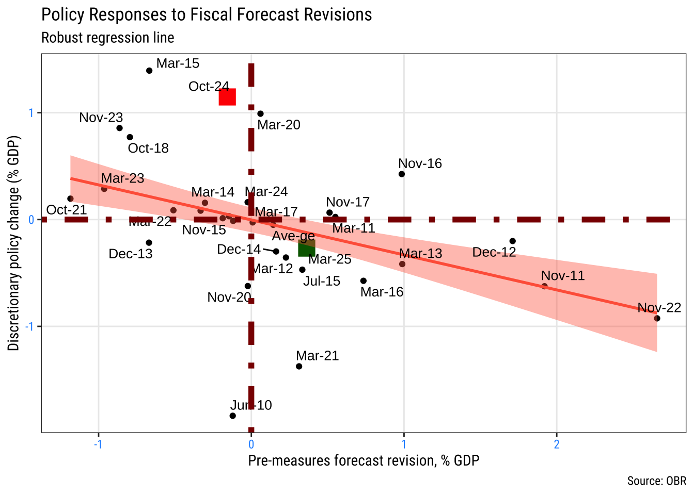

UK: A Fiscal Overview
Evolving views of the UK’s fiscal position
How the volume of UK public debt evolves over time reflects the accumulation of its borrowing decisions, when faced with economic shocks affecting the economy’s growth rate and interest rates on its debt.
The Office for Budget Responsibility (OBR) has reported on the sustainability of UK public finances since it was formed in 2010. I draw on how official forecasts have evolved over time, even preceding the formation fo the OBR, to summarise how official HM Teasury and OBR views of the UK’s fiscal position have evolved - beginning with public debt and public borrowing.
Since the global financial crisis (GFC) in 2007/08, as trend UK growth weakened, the UK has faced a long-lasting fiscal challenge. This challenge has involved lowering the fiscal deficit to stabilise the public debt to GDP ratio. Since the Covid-19 pandemic and burst of inflation it has also been necessary to do that amid higher interest rates on debt.

Several of those features are illustrated in the following charts. I use the evolution fo official forecasts as a way of showing how views and expectations for these key features have evolved.
The required fiscal position has become more challenging
Public finance decisions are best summarised by looking at the evolution of the primary balance, which is annual public borrowing excluding interest payments. This is the measure of public borrowing that spending and tax decisions control, although those decisions need to take account of the interest rate environment, as I show below.
The primary balance required to stabilise the public debt to GDP ratio depends on the growth rate of the economy and the interest rate on public debt. The following table shows how the required primary balance to stabilise the public debt to GDP ratio has evolved for different combinations of growth and interest rates.
Required, Debt-stabilising, Primary Balance (% GDP).
effective nominal interest rate, r
| g | 1.5 | 2 | 2.5 | 3 | 3.5 | 4 | 4.5 |
|---|---|---|---|---|---|---|---|
| 2.0 | −0.49 | 0.00 | 0.49 | 0.98 | 1.47 | 1.96 | 2.45 |
| 2.5 | −0.98 | −0.49 | 0.00 | 0.49 | 0.98 | 1.46 | 1.95 |
| 3.0 | −1.46 | −0.97 | −0.49 | 0.00 | 0.49 | 0.97 | 1.46 |
| 3.5 | −1.93 | −1.45 | −0.97 | −0.48 | 0.00 | 0.48 | 0.97 |
| 4.0 | −2.40 | −1.92 | −1.44 | −0.96 | −0.48 | 0.00 | 0.48 |
| Note: Calculations assume Debt/GDP at 100% and no stock-flow adjustments, for different combinations of 'r' and 'g'. | |||||||
The key point from the table is that, since the financial crisis, a slowing in UK growth and a more recent rise in interest rates have made it more difficult to stabilise the public debt to GDP ratio – the required primary balance has increased.
The UK has shifted from the bottom/left part of this table – when the average nominal growth rate was around 4% and the effective nominal interest rate was around 2.5-3.0% towards the middle/right part of the table. While a primary deficit around 1.0-1.5% used to be sufficient to stabilise the public debt to GDP ratio, now an ongoing primary surplus around 1% of GDP is required.
That captures the sense in which the UK’s required fiscal position has become more challenging.
A dramatic increase in annual interest payments on the public debt
As the Debt ratio has increased over time and, more recently, interest rates have risen, the interest payments on the public debt have also increased. The following chart shows how the OBR’s forecasts for interest payments have shifted higher over time.
Whereas the UK used to expect annual interest payments around £40-50bn between 2010 and 2020, forecasts since 2022, and the onset of Covid-19 and the Russian invasion of Ukraine have seen these jump higher to over £100bn per year.

Fiscal choices at fiscal events
Public finance choices are made by the Chancellor at national fiscal events, including the annual Budget.
The chart below summarises different fiscal choices at each fiscal event – either to tighten or loosen fiscal policy – and relates those choices to the macro news affecting the fiscal position at that event.

The chart shows that fiscal choices have been made in response to macro news, with fiscal tightening more likely when the macro news is negative and loosening more likely when the macro news is positive. The result is a clear downward-sloped relationship between fiscal choices and macro news.
There is, however, significant variation in fiscal choices for a given level of macro news. For example, the first Budget by Chancellor Reeves in October 2024 saw significant fiscal loosening at around 1% of GDP, reflecting a large boost to public spending, only partly funded by increased taxes. There had been little fiscal news at the time.
The subsequent 2025 Spring Statement too back some of that fiscal loosening, with fiscal news at the time raising the borrowing forecast.
Overall, policy space has become more limited over time owing both to a more challenging fiscal environment and fiscal choices that have tended to postpone fiscal tightening. The UK has less room to respond to future fiscal shocks.